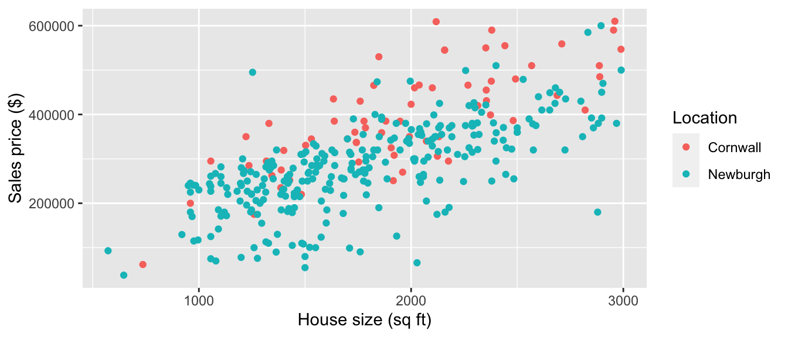
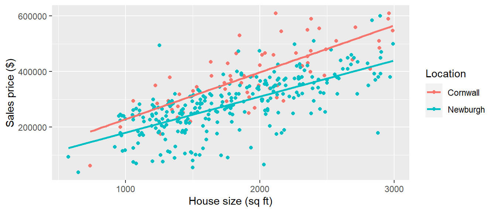

Chapter 4 Interactions
Last chapter, we investigate the effect of a treatment on an outcome. In this chapter, we investigate how the effect of a treatment on an outcome changes with another variable. If the effect changes with this variable, we say there is an interaction between this variable and the treatment. The distinction between the two types of research questions is important.
Last chapter, the research question of interest is: what is the effect of height on blood pressure? Instead, we might ask: is the effect of height on blood pressure different for males and females? In other words, is there an interaction between height and Sex. This research question is fundamentally different because the primary interest is in how Sex changes the relationship between height and blood pressure. (Note some disciplines refer to Sex as an effect modifier because Sex changes or modifies the relationship between height and blood pressure.)
Identify which of the following research questions involve interactions.
How does studying affect academic performance?
Does the effect of studying on academic performance depend upon sleep?
How much does a 500 square foot addition to a house increase its sales price?
Is the increase in sales price for a 400 square foot addition different in the Town of Cornwall than the City of Newburgh?
Above, b) and d) are research questions involving interactions. In a), the primary question of interest is the effect of a treatment variable (time studying) on an outcome variable (academic performance). In b), we are interested in the interaction between sleep and time studying. In other words, we want to know if the amount of sleep modifies the effect of studying on academic performance. It seems likely that studying is more effective when you get more sleep and evidence of this interaction tells us something about how the brain retains knowledge. c) and d) follow a similar pattern. In c), we are interested in the effect of house size on sales price. In d), we are interested in the interaction between house size and location. In other words, we want to know if the location of the house changes the relationship between size and sales price.
A very common misconception is that an interaction between two variables implies the two variables are associated with each other. To see why this is not the case, consider research question d) above. An interaction between house size and location means the average sales price per one square foot increase in house size is different in Cornwall than Newburgh. An association between house size and location means houses are, on average, bigger in either Cornwall or Newburgh. Clearly, houses being more expensive per square foot increase in size in one location (an interaction) does not imply the houses are bigger in either location (association).
In the next section, we investigate an example of an interaction between house size and location in real estate transactions. Newburgh, New York is a small city (population: 30,000) along the Hudson River about 60 miles north of New York City. Nearby, the town of Cornwall, New York (population: 13,000) is also along the Hudson River with similar commute times to NYC. Despite their similar locations, real estate prices in the two locations are very different. The file houses.csv contains records of 356 single family homes with three or four bedrooms sold in Cornwall or Newburgh from May 2020 to May 2021 (source: redfin.com). The figure below depicts the sales price versus house size by location.
houses <- read_csv(file = "./data/houses.csv")
houses %>%
ggplot(aes(x = `SQUARE FEET`,
y = PRICE,
color = CITY)) +
geom_point() +
labs(x = "House size (sq ft)",
y = "Sales price ($)",
color = "Location")
4.1 Main effect of house size on sales price
First, let’s estimate the effect of house size on sales price using the model below. We’ll refer to \(\beta_1\) in this model as the main effect of house size.
\[\widehat{Price} = \beta_0 + \beta_1 Size\]
where \(Price\) is the sales price of the house in dollars and \(Size\) is the size of the house in square feet.
model_main_effect <- houses %>%
lm(PRICE ~ `SQUARE FEET`, data = .)
summary(model_main_effect)##
## Call:
## lm(formula = PRICE ~ `SQUARE FEET`, data = .)
##
## Residuals:
## Min 1Q Median 3Q Max
## -279057 -38960 2236 46628 274449
##
## Coefficients:
## Estimate Std. Error t value Pr(>|t|)
## (Intercept) 36757.744 14889.155 2.469 0.014 *
## `SQUARE FEET` 146.683 7.963 18.421 <2e-16 ***
## ---
## Signif. codes: 0 '***' 0.001 '**' 0.01 '*' 0.05 '.' 0.1 ' ' 1
##
## Residual standard error: 78710 on 354 degrees of freedom
## Multiple R-squared: 0.4894, Adjusted R-squared: 0.488
## F-statistic: 339.3 on 1 and 354 DF, p-value: < 2.2e-16From the model output, the estimate of the main effect of house size on sales price is $146.68 per square foot increase. In other words, the average sales price increases by $146.68 per square foot increase in house size. If a homeowner adds a 20ft x 20ft addition, they can expect to increase the sales price of their home by about $60000.
4.2 Interaction between house size and location
In the last section, we found the average sales price increases by $146.68 for each square foot increase in house size. In this section, we ask whether there is an interaction between house size and location. In other words, is the increase in average sales price per square foot increase in house size the same in Newburgh as Cornwall?
The figure below depicts the sales price versus house size with a regression line for each location and shows some evidence of the following.
The average sales price increases with house size because the lines have positive slopes. We would say there is a main effect of house size.
The average sales price is lower in Newburgh than Cornwall because the blue line is lower than the red line. We would say there is a main effect of location.
There is an interaction between house size and location because the two lines are not parallel. In other words, the increase in average sales price per square foot of house size is smaller in Newburgh than Cornwall. The slopes of the Newburgh and Cornwall lines are $129.5 and $168.84 per square foot increase, respectively. This is a huge difference! A homeowner in Newburgh building a 20ft x 20ft addition would expect to increase their sales price by about $16000 less than a homeowner in Cornwall building the same addition.
houses %>%
ggplot(aes(x = `SQUARE FEET`,
y = PRICE,
color = CITY)) +
geom_point() +
labs(x = "House size (sq ft)",
y = "Sales price ($)",
color = "Location") +
geom_smooth(method = "lm", se = FALSE)
We can construct confidence intervals and perform hypothesis tests on the interaction (difference in slopes) between house size and location using a regression model. Below is a regression model with an interaction between house size and location. The quantity of interest in our analysis is \(\beta_3\), the coefficient on the interaction term.
\[\widehat{Price} = \beta_0 + \beta_1 Size + \beta_2 Location + \beta_3 Location * Size\]
where \(Location\) equals one if the house is in Newburgh and equals zero if in Cornwall. Interpretations of each term in the model are:
\(\beta_0\): the average sales price of a house in Cornwall with zero square feet.
\(\beta_1\): the change in average sales price for a one square foot increase in size for a house in Cornwall.
\(\beta_2\): the difference in average sales price comparing a zero square foot home in Newburgh to a zero square foot home in Cornwall.
\(\beta_3\): the difference in the change in average sales price for a one square foot increase in size comparing Newburgh to Cornwall.
Generally, we are not interested in \(\beta_0\), \(\beta_1\), and \(\beta_2\) when the research question is about an interaction. Too often, even experienced researchers misinterpret these coefficients. For example, \(\beta_2\) in this model is not the effect of location.
Why is \(\beta_3\) the quantity of interest in this study? Recall we want to determine the difference between the slopes of the Newburgh and Cornwall lines. In the model above, the expected sales price of a home in Newburgh is: \[\widehat{Price}_{newburgh} = \beta_0 + \beta_1 Size + \beta_2 * (1) + \beta_3 * (1) * Size = (\beta_0 + \beta_2) + (\beta_1 + \beta_3) Size\] The slope of the Newburgh line is \(\beta_1 + \beta_3\). The expected sales price of a home in Cornwall is: \[\widehat{Price}_{cornwall} = \beta_0 + \beta_1 Size + \beta_2 * (0) + \beta_3 * (0) * Size = \beta_0 + \beta_1 Size\] The slope of the Cornwall line is \(\beta_1\). Therefore, the difference in slopes comparing Newburgh to Cornwall is \((\beta_1 + \beta_3) - \beta_1 = \beta_3\).
The R code below fits the interaction model.
model_interaction <- houses %>%
lm(PRICE ~ `SQUARE FEET`*CITY, data = .)
summary(model_interaction)##
## Call:
## lm(formula = PRICE ~ `SQUARE FEET` * CITY, data = .)
##
## Residuals:
## Min 1Q Median 3Q Max
## -248040 -33210 5729 46740 281326
##
## Coefficients:
## Estimate Std. Error t value Pr(>|t|)
## (Intercept) 60123.88 34377.89 1.749 0.0812 .
## `SQUARE FEET` 168.84 16.92 9.976 <2e-16 ***
## CITYNewburgh -8718.48 37440.43 -0.233 0.8160
## `SQUARE FEET`:CITYNewburgh -39.34 18.76 -2.096 0.0368 *
## ---
## Signif. codes: 0 '***' 0.001 '**' 0.01 '*' 0.05 '.' 0.1 ' ' 1
##
## Residual standard error: 71350 on 352 degrees of freedom
## Multiple R-squared: 0.5828, Adjusted R-squared: 0.5792
## F-statistic: 163.9 on 3 and 352 DF, p-value: < 2.2e-16We see the change in average sales price per square foot increase in house size is about $40 smaller in Newburgh than in Cornwall. The \(p\)-value for this coefficient indicates there is strong evidence of an interaction between house size and location.
Note the coefficient on \(CITY\) has a large \(p\)-value. Many researchers misinterpret this to mean there is no effect of location on sales price. From the figure, it is very clear sales prices are higher on average in Cornwall than Newburgh for houses of similar size. The large \(p\)-value for the \(CITY\) coefficient simply tells us that there is not evidence houses with zero square feet are more expensive in Newburgh than Cornwall. It is a meaningless quantity often misinterpreted as something important.